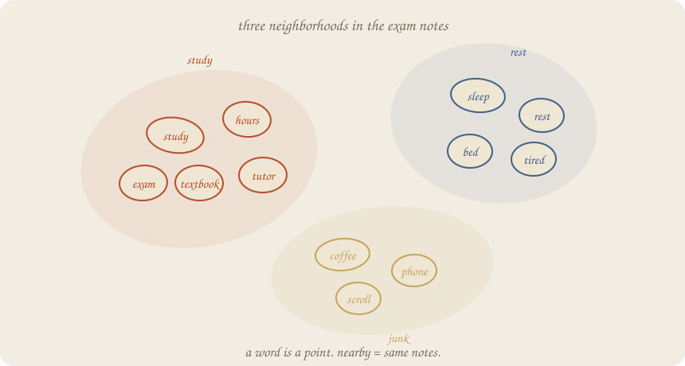
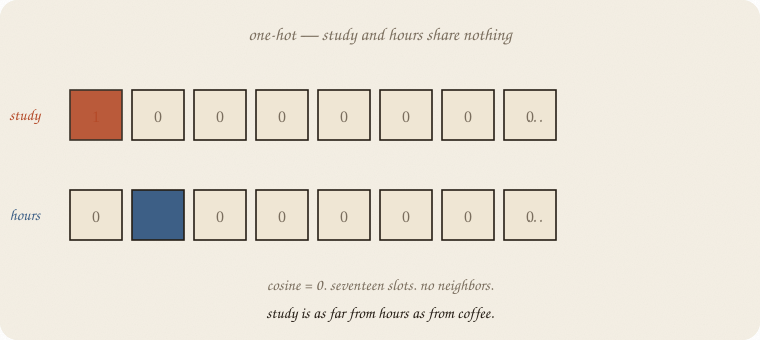
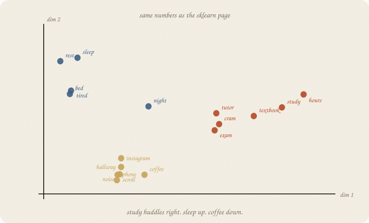
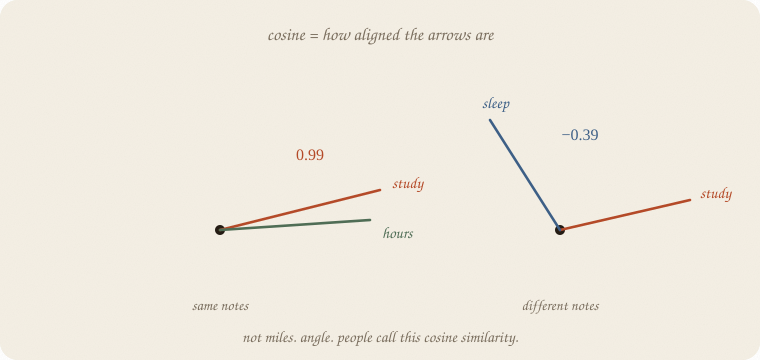
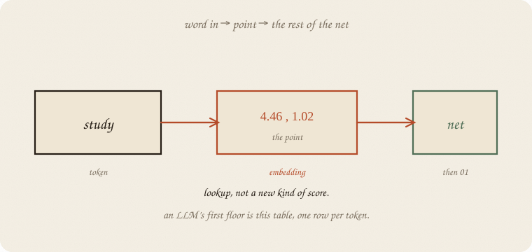
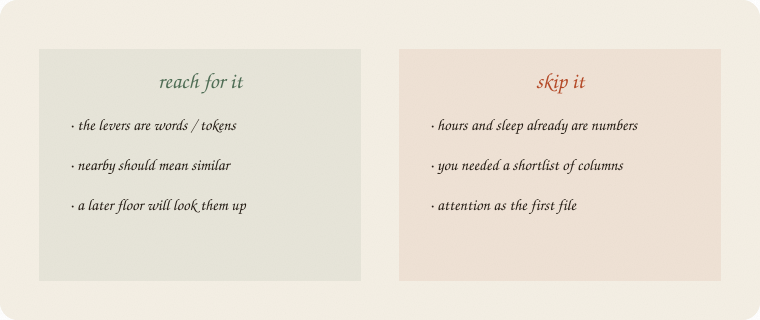

datazines · a sketchbook

Read 01 neural net first. Same exam world. The levers changed species: not hours as a number — words in the students’ notes. Softmax (03 softmax) still waits at the last layer.
This is 02 of the nets wing. Attention is the next room. Not this file.
Flip it like a notebook. One page = one idea. Done.
Hours, sleep, tutor: three numbers. The tiny net could score them.
Now the input is a note:
study hours textbook
Those are words. A net cannot add “study” to “hours.” It needs a number for each word first.
Same people. Same exam. New object: the vocabulary.
The blunt trick: give every word its own slot. 1 here, 0 everywhere else. People call this one-hot.
Seventeen words → seventeen slots. study is [1, 0, 0, …]. hours is [0, 1, 0, …].

They never share a 1. Cosine is 0. study is as far from hours as from coffee. The map has no neighborhoods. A later floor has nothing to reuse.
One-hot is a dictionary. It is not a cloud.
Twenty-seven short notes. Three neighborhoods, on purpose:
Count how often two words share a note. Then squash that table down to two numbers per word (a picture; grown-up tables have hundreds). Nearby on the page means they kept company.

study lands at (4.46, 1.02). hours at (5.23, 1.77) — same huddle. sleep is up and left. coffee is down. That pair of numbers is the embedding.
People call the whole table an embedding matrix. One row per word. Lookup, not a new kind of score.
How close is close? Not miles on the paper. Angle.
Two arrows from the origin. Same direction → cosine near 1. Right angle → 0. Opposite → negative.

On these notes:
| pair | cosine |
|---|---|
| study · hours | 0.99 |
| sleep · rest | 0.99 |
| coffee · phone | 0.96 |
| study · sleep | −0.39 |
| study · coffee | −0.36 |
One-hot said study · hours = 0. The cloud says they are almost the same arrow. That is the whole gift.
Nearest to study: textbook, tutor, hours. Nearest to sleep: rest, tired, night. Pattern, not a definition of “study.”
A net does not reinvent the point every time. It looks the row up.

study → (4.46, 1.02) → then 01 neural net does score → squash → …
An LLM’s first floor is this table, one row per token (a word-piece, not always a whole word). The rest of the net never sees the letters. It sees the point.
Who writes the table? On this page: the notes did, via a short PCA. Grown-up tables walk (01 gradient descent): leftover from “predict the next word” nudges every row. Same leftover as 01. Different floor.
If you keep only one thing:
a word is a point. nearby = same notes. lookup, then the net.
Twenty-seven exam notes, house seed 7 (PCA). Count co-occurrence, two dimensions. The printout is the cloud on page 3.
import numpy as np
from sklearn.feature_extraction.text import CountVectorizer
from sklearn.decomposition import PCA
from sklearn.metrics.pairwise import cosine_similarity
notes = [
"study hours textbook",
"hours study tutor exam",
"textbook hours cram",
"tutor study hours",
"cram textbook study night",
"hours textbook tutor",
"study cram hours exam",
"tutor textbook hours",
"exam study textbook",
"night cram hours",
"sleep rest tired",
"rest sleep bed",
"tired sleep rest night",
"bed rest sleep",
"sleep tired bed",
"rest bed tired",
"sleep night rest",
"coffee phone scroll",
"phone coffee noise",
"noise hallway coffee",
"coffee noise hallway",
"phone scroll coffee",
"scroll phone instagram",
"study sleep hours",
"coffee study hours",
"tutor sleep rest",
"night exam coffee",
]
vec = CountVectorizer()
X = vec.fit_transform(notes).toarray()
words = np.array(vec.get_feature_names_out())
C = X.T @ X
np.fill_diagonal(C, 0)
E = PCA(n_components=2, random_state=7).fit_transform(C)
idx = {w: i for i, w in enumerate(words)}
sim = cosine_similarity(E)
oh = np.eye(len(words))
print("notes", X.shape[0], " words", X.shape[1], " embed dim 2")
print("one-hot cosine study·hours", round(float(oh[idx["study"]] @ oh[idx["hours"]]), 2))
print("embed cosine study·hours", round(float(sim[idx["study"], idx["hours"]]), 2))
print("embed cosine study·sleep", round(float(sim[idx["study"], idx["sleep"]]), 2))
print("embed cosine study·coffee", round(float(sim[idx["study"], idx["coffee"]]), 2))
print("embed cosine sleep·rest", round(float(sim[idx["sleep"], idx["rest"]]), 2))
print("embed cosine coffee·phone", round(float(sim[idx["coffee"], idx["phone"]]), 2))
print("point study ", np.round(E[idx["study"]], 2))
print("point hours ", np.round(E[idx["hours"]], 2))
print("point sleep ", np.round(E[idx["sleep"]], 2))
print("point coffee", np.round(E[idx["coffee"]], 2))
for seed in ("study", "sleep", "coffee"):
i = idx[seed]
order = np.argsort(-sim[i])
parts = [f"{words[j]} {sim[i, j]:.2f}" for j in order if j != i][:3]
print(f"near {seed:6s}", " ".join(parts))
notes 27 words 17 embed dim 2
one-hot cosine study·hours 0.0
embed cosine study·hours 0.99
embed cosine study·sleep -0.39
embed cosine study·coffee -0.36
embed cosine sleep·rest 0.99
embed cosine coffee·phone 0.96
point study [4.46 1.02]
point hours [5.23 1.77]
point sleep [-2.8 3.9]
point coffee [-0.42 -2.89]
near study textbook 1.00 tutor 1.00 hours 0.99
near sleep rest 0.99 tired 0.93 night 0.93
near coffee phone 0.96 noise 0.96 scroll 0.95
One-hot: study and hours share nothing. Embed: 0.99, and they sit at (4.46, 1.02) and (5.23, 1.77) — the huddle on page 3. Sleep is another neighborhood (cosine −0.39 with study). Coffee’s neighbors are phone, noise, scroll — junk, as written.
PCA on co-occurrence is a sketch of the table. Cosines on this page are in that 2-d drawing — angles can warp. Word2vec and an LLM walk the same idea with leftover, in fatter dimensions. Dim 2 is so we can draw it. Do not ship 2-d as a language model.
| word | meaning |
|---|---|
| token | a word, or a word-piece |
| one-hot | one slot per token; no neighbors |
| embedding | the point (a row in the table) |
| cosine | angle between two points |
| lookup | token → row → the rest of the net |
| dim | how fat the point is (2 here; hundreds later) |
Also called (in a room):
| here | there |
|---|---|
| point / row | embedding vector |
| one-hot | dummy encoding |
| nearby | similar meaning |

Reach for it when the levers are words / tokens, nearby should mean similar, and a later floor will look the row up.
Skip it when hours and sleep already are numbers (01 neural net / 01 logistic regression); you needed a shortlist of columns (03 lasso); you wanted attention as the first file.
Pays you: words become knobs a net can score. Neighborhoods. The first floor of an LLM without a transformer cartoon.
Costs you: dim 2 is a postcard. Co-occurrence ≠ meaning. A table walked on tiny notes will huddle junk with junk and still not know what coffee is. Pattern, not a dictionary.
Nets wing, 02. A point per token. Next room: 03 attention — which other tokens matter.
Flip it like a notebook. One page = one idea.